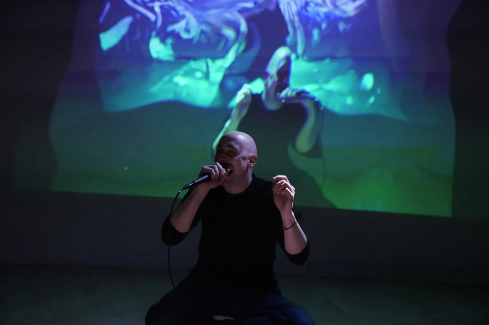
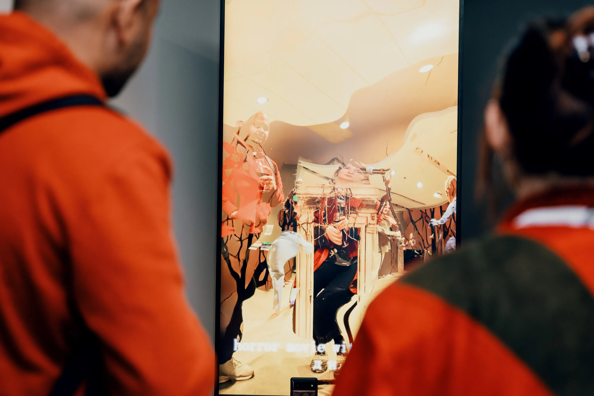
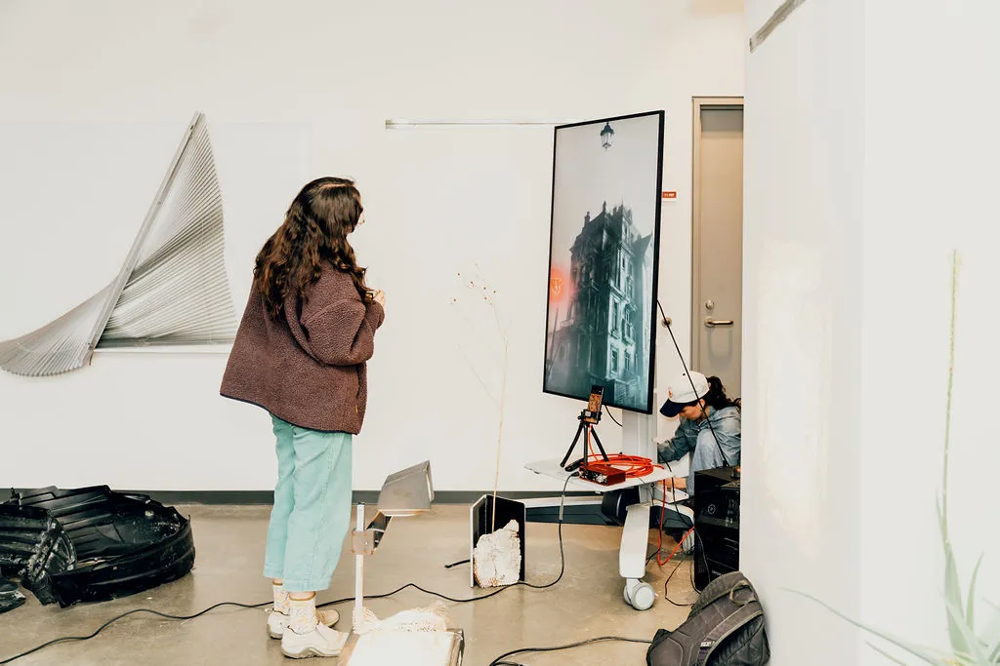
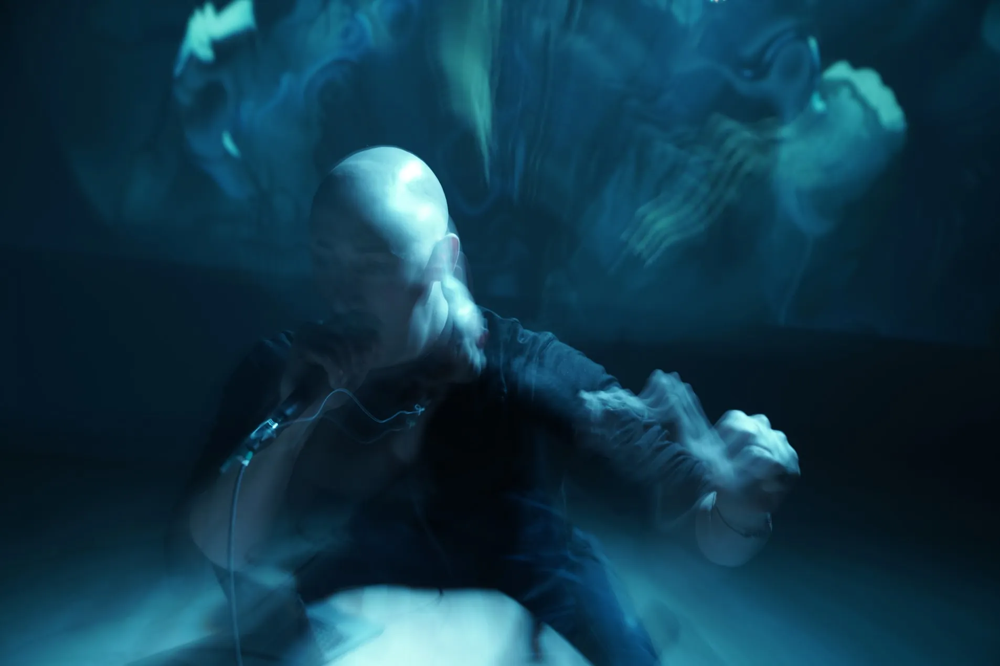
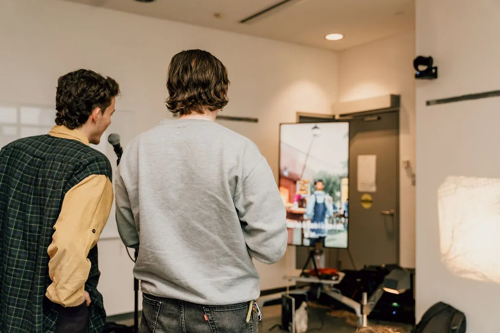
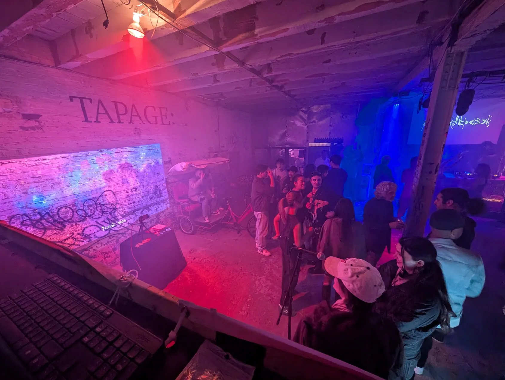

01 / An encounter with a machineMechanical
Mechanical
Meanderings
A poetic mirror. Speak, watch your silhouette become something else, and meet the machine where it’s at.
Live speech and presence pass through a cascade of generative models. Mishearings, transformations, and unexpected associations become material for the next encounter.
View documentation ↗